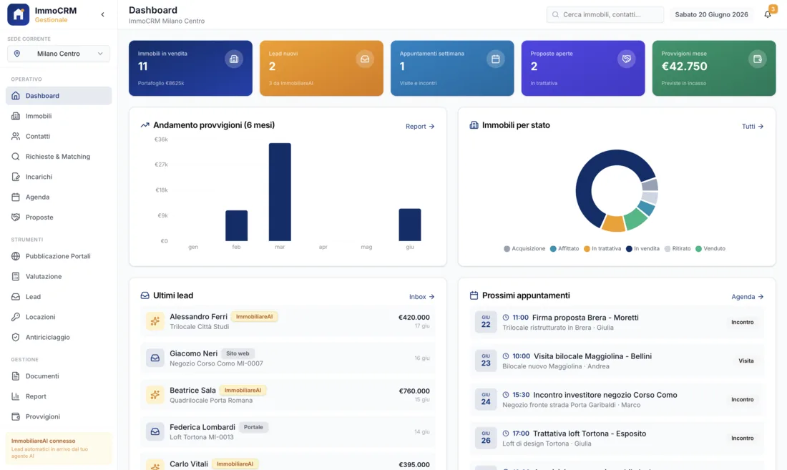
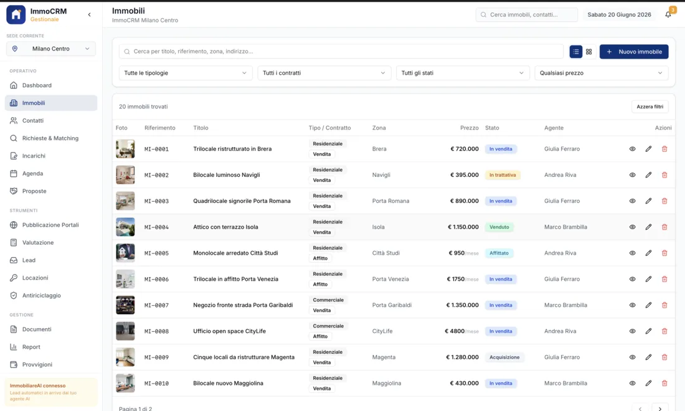
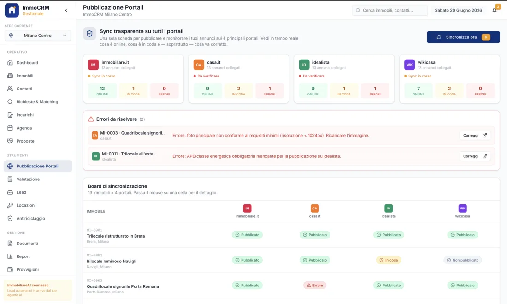
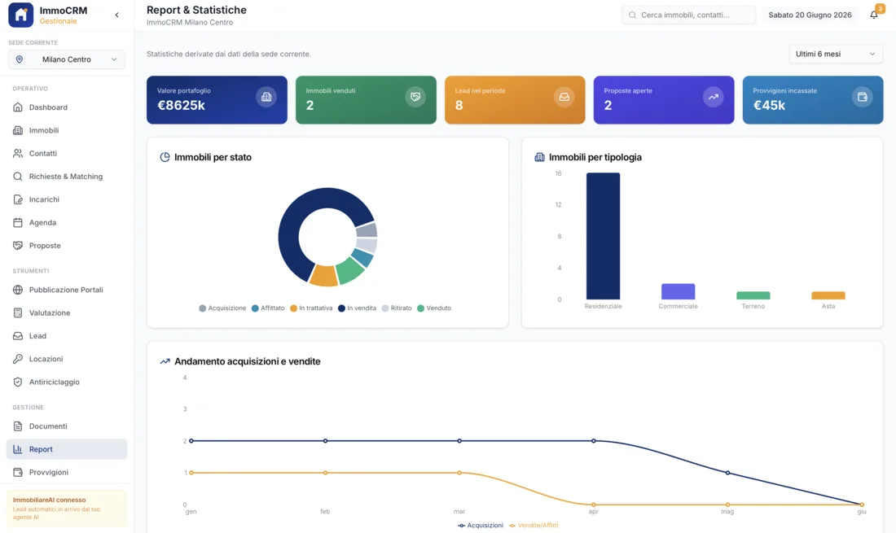
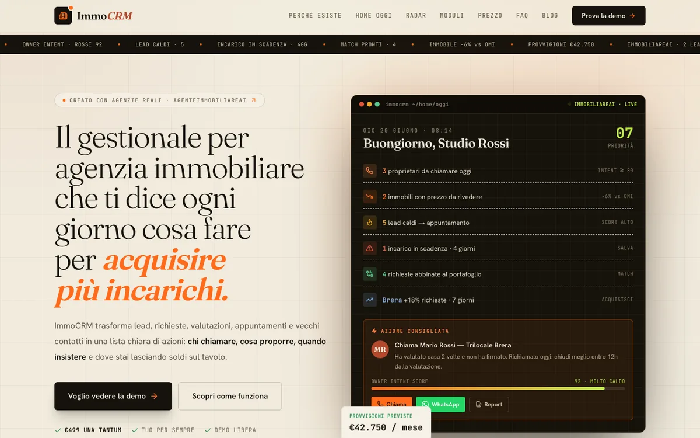

Portafoglio e dati tuoi
Server in Italia/UE, DPA scritto, niente rivendita dati. Anche se domani sparisco, hai il dump completo del database, gli immobili e le anagrafiche in CSV e la documentazione tecnica. Qualunque dev può continuare.
Un gestionale immobiliare è il software con cui un'agenzia tiene insieme il portafoglio immobili, le richieste degli acquirenti e le scadenze degli incarichi. La differenza tra un archivio e un gestionale vero è una sola: il primo ti dice cosa hai, il secondo ti dice cosa fare oggi — quale richiesta ha trovato una corrispondenza, quale incarico scade fra tre settimane, quale proprietario non senti da un mese.
ImmoCRM è il gestionale che ho costruito per le agenzie italiane: immobili con planimetrie e visure, richieste con matching automatico sul portafoglio, incarichi in scadenza segnalati prima che sia tardi, valutazioni con dati OMI, pubblicazione degli annunci e provvigioni per agente.
Non è un mockup: c'è una demo pubblica online, ci entri adesso senza scrivere a nessuno. €1.600–2.500 una tantum, senza canone per agente.
Entra un trilocale in zona stazione. In agenzia c'è una richiesta aperta da sei settimane che cerca esattamente quello, ma l'ha presa un altro agente e sta in un foglio diverso. Il match esiste e non lo vede nessuno: l'immobile va in vetrina, la richiesta resta aperta, e la provvigione la fa qualcun altro.
Un incarico in esclusiva dura sei mesi. Al quinto mese nessuno chiama il proprietario, al sesto scade, al settimo l'immobile è in vetrina da un'altra agenzia. Non l'hai perso per il prezzo o per il servizio: l'hai perso perché nessuno aveva una data segnata da qualche parte.
Chi lavora in agenzia da anni sa a memoria quale proprietario è trattabile, chi ha fretta e chi ha già rifiutato due offerte. Quel sapere non è scritto da nessuna parte: quando quella persona è in ferie, cambia agenzia o si ammala, l'agenzia riparte da zero su metà del portafoglio.
Gli immobili difficili si chiamano poco, perché chiamare significa dire che non ci sono novità. Così passano settimane, il proprietario si convince che non stai lavorando e la prima telefonata che riceve da un concorrente trova terreno fertile. Nessuno tiene il conto di quanto tempo è passato.
Chi ha portato l'incarico, chi ha fatto la visita, chi ha chiuso: a fine mese si ricostruisce tutto a memoria, e su una compravendita a quattro mani la discussione su chi prende cosa nasce sempre. Un conto scritto quando i fatti succedono costa zero; ricostruirlo dopo costa una riunione.
Risultato? Non perdi le trattative che hai fatto male
ma quelle che non hai visto.
Queste sono schermate di ImmoCRM come gira adesso, non concept renderizzati. Se vuoi verificarle di persona, la demo pubblica è online e non chiede registrazione.





Scheda completa: foto ordinate, planimetria, dati catastali, classe energetica, visura, prezzo richiesto e storico dei ribassi. Con l'incarico collegato, la sua durata e l'esclusiva.
Ogni richiesta acquirente porta zona, budget, metratura, locali e i requisiti non negoziabili. Quando entra un immobile, il gestionale ti dice quali richieste combaciano. E viceversa.
Data di inizio, durata, esclusiva, preavviso. Gli incarichi che si avvicinano alla scadenza salgono nelle priorità giornaliere, con il preavviso che decidi tu. È dove le agenzie perdono più portafoglio.
Valutazioni appoggiate ai dati OMI dell'Agenzia delle Entrate per la zona, storico delle proposte ricevute e rifiutate, trattative con il loro stato. Quando il proprietario chiede «a che punto siamo», la risposta è scritta.
Chi ha portato l'incarico, chi ha fatto le visite, chi ha chiuso: la ripartizione si scrive quando i fatti succedono. Report di andamento per agente e per sede, senza ricostruzioni a memoria.
In quasi tutte le agenzie italiane il portafoglio e le richieste vivono separati. Gli immobili stanno in un archivio — file, cartelle, il gestionale del portale — e le richieste degli acquirenti stanno nella testa dell'agente che le ha raccolte, al massimo in un blocco note. L'incrocio avviene solo quando qualcuno se ne ricorda, e qualcuno se ne ricorda quando ha tempo, cioè quasi mai.
Il costo di questa separazione non si vede in bilancio perché è fatto di cose che non sono successe: la visita che non hai proposto, la richiesta che si è chiusa altrove, l'immobile rimasto sei mesi in vetrina mentre il suo acquirente era già passato dal tuo ufficio. Non sono errori, sono omissioni — e le omissioni non lasciano traccia.
In ImmoCRM le due cose stanno nello stesso posto e si guardano da sole. Carichi un immobile e vedi subito quali richieste aperte combaciano, apri una richiesta e vedi cosa hai già che potrebbe andare bene. Il confronto usa i criteri che imposti tu — zona, budget con tolleranza, metratura minima, requisiti non negoziabili come piano terra o ascensore — e finisce nelle priorità della mattina, insieme agli incarichi in scadenza. Non è intelligenza artificiale: è avere i due elenchi nello stesso database e un confronto che gira ogni notte.
| Aspetto | Excel + cartelle | Gestionale a canone | ImmoCRM |
|---|---|---|---|
| Costo | €0 in licenze | canone mensile per agente | €1.600–2.500 una tantum |
| Costo per nuovo agente | Nessuno | Un'altra licenza | Nessuno |
| Matching richieste ↔ immobili | A memoria | Dipende dal piano | Automatico, sui tuoi criteri |
| Alert incarichi in scadenza | Se qualcuno segna la data | Di solito sì | Nelle priorità della mattina |
| Adattamento ai tuoi flussi | Totale — è il tuo file | Ti adatti tu | Configurato sulla tua agenzia |
| Proprietà dei dati | Tua | Del fornitore, export limitato | Tua, dump completo su richiesta |
| Se smetti di pagare | Niente, è un file | Perdi l'accesso al portafoglio | Nessun canone obbligatorio |
| Lo puoi provare prima? | — | Di solito con un commerciale | Demo pubblica, senza registrazione |
Parliamo di prezzi subito: il setup sta tra €1.600 e €2.500 una tantum secondo lo scope, senza canone per agente — che è la voce che nei gestionali a licenza cresce ogni volta che assumi. Le integrazioni extra si quotano a parte, su richiesta. Preventivo scritto in 48h dopo la demo, a prezzo chiuso.
Server in Italia/UE, DPA scritto, niente rivendita dati. Anche se domani sparisco, hai il dump completo del database, gli immobili e le anagrafiche in CSV e la documentazione tecnica. Qualunque dev può continuare.
Per 12 mesi dal go-live, qualunque bug nel codice che ho scritto lo sistemo gratis: match che non escono, alert che non parte, provvigione calcolata male. Email a me, lo aggiusto. Senza fatture extra.
Se un giorno vuoi cambiare: export completo (dump + CSV di immobili, proprietari, richieste, incarichi, proposte), documentazione dello schema dati e 2h di call con il tecnico del nuovo fornitore. Niente lock-in, mai.
Non c’è un prezzo fisso a taglia unica: dipende da quanti flussi vanno mappati. La cifra esatta sta nel preventivo scritto che ricevi in 48h dopo la demo, ed è chiusa — se il lavoro si rivela più lungo del previsto, il rischio è mio.
Le integrazioni extra (API di sistemi terzi, hardware, migrazioni complesse) si quotano a parte, su richiesta.
Acconto del 40% alla firma, che è quello che fa partire il lavoro. Il saldo alla consegna, quando il gestionale è in funzione e i conti tornano.
Se preferisci, il saldo si può rateizzare: numero e scadenze delle rate si concordano nel preventivo, prima di firmare. Nessun interesse, nessuna finanziaria di mezzo.
La fattura viene emessa dalla Spagna: sono residente alle Isole Canarie, territorio spagnolo che sta fuori dall’area IVA dell’Unione Europea.
In pratica: gli importi sono senza IVA. Se hai partita IVA italiana, l’operazione la gestisce il tuo commercialista in reverse charge, come per qualsiasi servizio ricevuto da fuori UE.
Preventivo a prezzo chiuso, condizioni di pagamento e trattamento fiscale sono scritti nero su bianco nel documento che ricevi prima di firmare. Per la posizione IVA della tua azienda fai comunque una verifica con il tuo commercialista.
La demo pubblica è aperta e non chiede niente. Questo form serve per il passo dopo: vederlo sui flussi della tua agenzia. Mi descrivi come lavori in 5 step, ti scrivo entro 48h con un orario per la demo guidata di 30 minuti.
Cosa vediamo nella demo guidata:
La demo pubblica di ImmoCRM è online e non chiede registrazione. Entra, carica un immobile finto, apri una richiesta, guarda il match. Dieci minuti e sai già se ti serve. Poi, se ti convince, il form qui sopra.
apri la demo pubblicaScrivimi su WhatsApp, fissiamo 30 minuti. Mi racconti come lavori (quanti agenti, quanti immobili, come tieni le richieste oggi), io ti dico se ImmoCRM è la cosa giusta o se conviene un'altra strada. Niente vendita aggressiva.
scrivimi su whatsapp